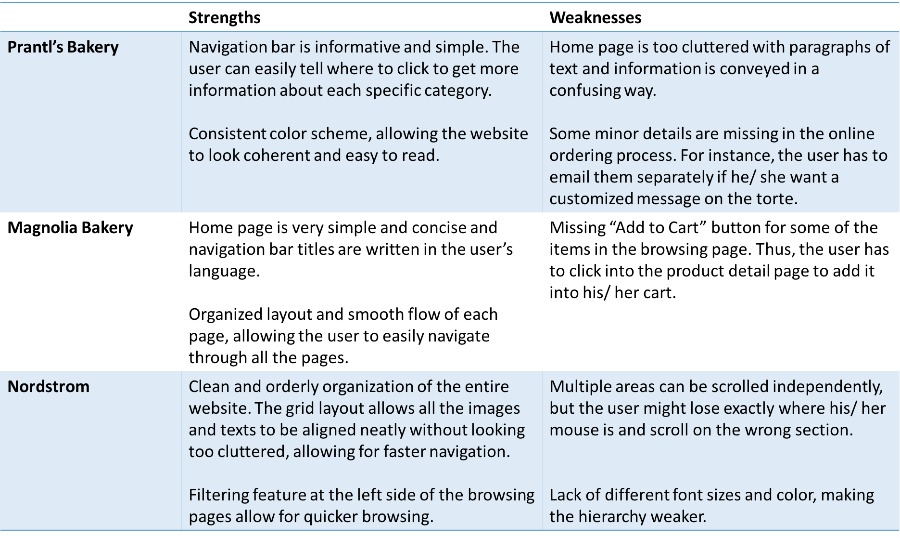

Skills: UI Design (Balsamiq, Sketch, Invision), User Testing, HTML, CSS, Javascript
05-430: Programmable User Interfaces
January 2018 - March 2018
I designed and developed a website for Bun Bun Bake Shop, a fictional bakery store. After iterating through multiple prototypes and conducting user testing in between them, I implemented the pages in HTML, CSS, and a bit of Javascript. This project allowed me to learn and gain experience in front end web design.
Bun Bun Bake Shop, a small (fictional) bakery in Pittsburgh, wants to expand its business to allow customers to order cinnamon rolls online and have them delivered. The cinnamon rolls come in six different flavors and for each flavor, customers should be able to select their glazing and amounts preferences. To design and implement the bakery's new website, I conducted competitive analysis on existing websites as well as established Bun Bun Bake Shop's brand identity before moving on to wireframing and developing the different pages.
Competitive Analysis
I began the project by conducting competitive analysis on other existing websites that allow for product purchasing. To get a feel of navigating through these websites, I tried looking for information, browsing products, and putting items into my cart. I looked at Prantl's Bakery, Magnolia Bakery, and Nordstrom.
Paper Prototypes
Based on the strengths and weaknesses I found in other websites, I created low-fidelity paper prototypes.
UserTesting
Using my paper prototypes, I conducted a couple of user tests, having the participants simulate the process of looking for more information about the bakery and purchasing an item. It was through the user tests that I realized some missing or confusing parts of my design, which I used for the next iteration.
Medium-Fidelity Prototypes
High-Fidelity Prototypes
Heuristic Evaluation
Before coding the pages, I conducted heuristic evaluations with a couple of classmates, focusing on the heuristics of H2-1 Visibility of System Status, H2-2 Match Between System and Real World, H2-3 User Control and Freedom, H2-4 Consistency and Standards, and H2-8 Aesthetic and Minimalist Design. I made minor changes to my high-fidelity designs, incorporating the feedback I received.
I implemented the pages with HTML and CSS while ensuring that my code was well organized and in standardized style conventions.
Github link: HTML/CSS workLastly, I gained a bit of practice with Javascript to make the website functional. I implemented some of the shopping cart features, using JQuery and local storage.
Github link: Javascript work